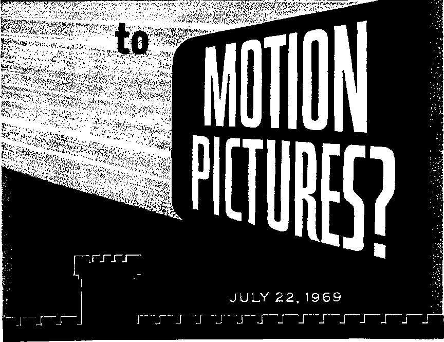
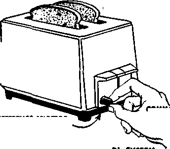

Whats Happening
THE REASON FOR THIS MAGAZINE
News sources that are able to keep you awake to the vital issues a* our times must be unfettered by censorship and selfish interests. "Awake I" has no fetters. It recognizes facts, faces facts, Is free to publish facts. It Is not bound by political ties; It Is unhampered by traditional creeds. This magazine keeps itself free, that it may speak freely to you. But it does not abuse its freedom. It maintains integrity to truth.
The viewpoint of "Awake!" is not narrow, but is international. "Awake!" has Its own correspondents in scores of nations. Its articles are read tn many lands. In many languages, by millions of persons.
In every issue "Awake!" presents vital topics on which you should be informed. It features penetrating articles on social conditions and offers sound counsel for meeting the problems of everyday life. Current news from every continent passes in quick review. Attention is focused on activities in the fields of government and commerce about which you should know. Straightforward discussions of religious issues alert you to matters of vital concern. Customs and people in many lands, the marvels of creation, practical sciences and points of human interest are all embraced in its coverage. "Awake!'' provides wholesome, instructive reading for every member of the family.
"Awake!" pledges itself to righteous principles, to exposing hidden foes and subtle dangers, to championing freedom for all, to comforting mourners and strengthening those disheartened by the failures of a delinquent world, reflecting sure hope for the establishment of God's righteous new order in this generation.
Get acquainted with "Awake!" Keep awake by reading "Awake!"
■MR—I. ■ —| „ B1|.
Published Simultaneously in the United States by the WATCHTOWER BIBLE AND TRACT SOCIETY OF NEW YORK, INC. 117 Adams Street Brooklyn, N.Y. 11201, U.S.A.
and in England by WATCH TOWER BIBLE AND TRACT SOCIETY Watch Tower House, The Ridgeway London N.W. 7, England N. H. Knorr, President Grant Suttir, Secretary
Average printing each issue: 5,650,000 3d i copy (Australia, 5c; South Africa, 314*)
Yearly tutaerlptfon rater Mle«* far semimonthly editions
New Zealand; 621 New North Rd., Auckland 3
Africa, Private Bag 2, P.O, Elandrfontein, Tri. 70e (Monthly adltlam ent half the abm rat*)-) tomFttancn tor subscriptions should be sent to the office in your country. Otherwise send your remlttaoco to Brooklyn. Notice of ejcplrattoii is sent at least two issues before autacriptlon expires.
Now published in 26 languages Semimonthly—Afrikaans, Cebuano, Danish, Dutch, English, Finnish, French, German, Greek, Hobo, Italian, Japanese, Korean, Norwegian, Portuguese, Spanish, Swedish, Tagalog, Zulu.
Monthly—Chinese, CinyanU, Hiligaynon, Malay a Jam, Polish, Tamil, Ukrainian.
CHANGES OF ADDRESS stolid Feith 11 thirty day* tofor* yoir moving date. Give at yeir old and now addrm (If pwlbl*, your old address label). Write Watch Tower, Watch Tower Hobm, The Rld|*way, London N.W, 7, England.
Entered as eecond-class matter at Brooklyn, N.Y. Printed In England
Tto Bible translation regalarly nod in *'Awak*l” Is the New World Translation of the Holy Scripture*, 1961 edit Im. Wkea other tnmehttlons art ind, this l» clearly milted.
CONTENTS
Motion Pictures “Explode’’ with Sex
What Motion Pictures Feature Today
What Effect Do These Films Have?
Why the Rapid Moral Decline
Have the Churches Safeguarded
Machines with “Minds"—Automatic
“Your Word Is Truth"
How Long Were the Israelites In Egypt?
Watching the World
Volume L
London, England, July 22, 1969
Number 14
Motion Pictures "Explode" with
. . A * A A Aa A A
HAVE you noticed what has happened to motion pictures lately? In the last few years there has been an “explosion” of films featuring adultery, fornication, lesbianism, homosexuality, violence and mass killing.
If you look at movie advertisements in newspapers now, you will be struck by their almost pornographic tone. On just one day, some headlines among the eight pages of motion-picture advertisements in a leading conservatwe newspaper ran as follows, each for a different film:
“One of the most immoral, one of the most subversive . . . movies you will see this year.”
"A lesbian affair! Torrid, clawing, backbiting!”
“The wackiest, sexiest film yet!”
“Eerie and erotic! This is strong stuff. It's not for the timid or the straight-laced!”
“A landmark likely to permanently shatter many of our last remaining movie conventions.”
On the same day, another newspaper that carried many of these same advertisements added one that said: “Where wifeswapping and minor orgying is just swell.”
Some theaters show nothing but this type of film. The New York Times reported: “Eighteen months ago, New York City had 10 theaters that showed sex-violence films on a seven-days-a-week policy. All were clustered on or near 42nd Street and Times Square. Today, 25 full-time sexviolence theaters are scattered throughout the city . . . There have, however, been two significant changes in the films themselves. Now, more often than not, the contents go much further than ever before in living up to the promises of nudity, violence and perversion held out in the titles.” Commenting on this trend, Loofc magazine noted; “The films we are getting and that are to come have no holds barred as far as sex and violence and language go.”
This same trend is taking place throughout the world. From Finland our Awafce? correspondent reports: "Dr. Jerker A. Eriksson of the government censorship board said; ‘What today is unbelievable, not to say horrifying, is tomorrow quite natural. In the “sex market” a liberal and more courageous course will be chosen.’ ” Our correspondent adds; "Some films even show sexual intercourse and are absolutely pornographic. Advertisements in Finnish newspapers read: ‘The triumphal victory of immorality,’ ‘Inexhaustible, expressive sex,’ ‘Would unrestrained, undisciplined and uninhibited be to your taste?’ ”
Why so many new films on sex and violence now? One reason analysts give has to do with the impact that the advent of television had. Millions of people began staying at home to watch the entertainment on their TV sets. The old expression “Let’s go to a movie!” was replaced by “Turn on the TV!” As a result, hundreds of motion-picture theaters went out of business.
Faced with this sharp competition, the motion-picture industry turned to new things such as the wide screen and stereo sound. The next step was to make the films bolder, the scenes more sexual and violent.
But why highlight sex and violence? The Des Moines, Iowa, Sunday Register comments: “Movies with a ‘condemned’ rating always seem to draw bigger crowds than the ‘family-type pictures,’ said a Dubuque theater manager. ‘Pictures filled with violence and sex; that seems to be what they want today,’ said M. J. Dew-Brittain, general manager of the Grand and Strand theaters here.’’
Films are produced to make money. Whatever sells is what the industry will produce. And what sells today is sex and violence, drawing people into theaters. Hence, this is given as a main reason for the onslaught of these films.
However, there is another reason for all this, and it is far, far more significant than any other reason. But before analyzing it, let us take a closer look at what many of these new films contain. Also, is there really any harm in them? How do they affect people, especially youths? And in view of the trend, what can you do about it?
What MOTION
Motion pictures have always contained love stories and violence. Usually, though, these were kept within moralistic bounds.
Today, this is no longer the case. As The Wall Street Journal observes:
“Scenes of nudity and perversion, once taboo in films financed and distributed by the major studios, are appearing with growing frequency. . . .
“Church groups have adopted a more liberal attitude. . . . The movie Bonnie and Clyde, a violent comedy-drama about a sexually impotent bank robber and his girl friend, was picked by the Catholic office as 1967’s best film for mature audiences. . . .
“The attitudes reflected in many of the
PICTURES FEATURE
"VIVLKHT
WORLD"
TODAY
WlUltUUSM DAmsai ERTED PLEASURE
new films are in
sharp contrast with the old Hollywood pictures. The new ones are less moralistic, and frequently the villain is glorified. In Bonnie and Clyde, the young pair rob and kill, and yet are depicted as happy-go-lucky innocents. When in the end they are gunned down in an ambush, the audience’s sympathy goes out to the slain pair.’’
Many recent films depict, yes, even glorify sexual immorality. Fornication and adultery are sprinkled liberally through them. Indeed, it is often difficult to find an entirely “clean” film nowadays.
When one recent film that originated in Sweden came to the United States, it was impounded by the United States Customs Service. But a United States Circuit Court of Appeals ruled that it could be shown uncut. The Wall Street Journal of March 10, 1969, stated of this film:
"The 120 minutes at screening time depict the hero and heroine in abundant nudity, various scenes of intercourse (including one in the crook of a tree) and more exotic sexual play. It has a dream sequence in which the heroine castrates her lover. . . .
“To quite another group, the film is the final confirmation of a disaster they have long seen brewing. The growing permissiveness of American society, they maintain, has finally reached total depravity."
When reviewing this film, a New York Times movie critic stated: “The Trash Explosion is here.” He called the film “genuinely vile and disgusting . . . pseudopornography at its ugliest,” and added:
"Yet the thing which distresses me—and indeed should distress us all—is the way it has been received. Passing one of the two theaters in New York where this rotten little movie was playing last week, I was amazed to see the lines of suckers at the box office. 'Must be somethin’ dirty,’ said the cab driver, . . . ‘Only things people line up for in this town is somethin’ free or somethin' dirty.’ ’’
In more and more films now, fornication, adultery and wife-swapping are excused or condoned. Even prostitution has been glorified, for one film was based on the life of a prostitute who sold her body every day of the week except one, which she kept ‘holy.’ She was portrayed as an honorable person. The film was later shown on television, which prompted this comment from Look:
“Morally, there are getting to be fewer and fewer holds barred even on the small Screen [TV]. . . . This is, after all, the television season that has brought us Never on Sunday on a network prime-time basis so that the kiddies who weren’t abed by 9 p.m. could get a gander at the happiest prostitute in Piraeus.”
Nor does the trend end with films and television. It is very evident in stage plays too. The New York Times of April 1, 1969, said in an editorial: “The explicit portrayal on the stage of sexual intercourse is the final step in the erosion of taste and subtlety in the theater. It reduces actors to mere exhibitionists, turns audiences into voyeurs and debases sexual relationships almost to the level of prostitution.”
Many people in the film industry do not think fornication and adultery are bad. But this opinion sharply differs with that of Almighty God. In his Word, the Bible, we read: “Do not be misled. Neither fornicators . . . nor adulterers . . . will inherit God’s kingdom.” (1 Cor. 6:9, 10) So the trend toward ever greater sexual permissiveness in films goes directly contrary to God’s laws. Is this significant? Does it have a greater meaning for our day? Very much so, as we shall later see.
Also highlighted in many films now are crime and violence. No, not the kind that saw the sheriff hunt down the outlaw and shoot him. Many films today display a gross, morbid, even sadistic dwelling on killing and bloodshed. At times it is the villain that is glorified, not the innocent victim.
The Los Angeles Herald-Examiner reported of this: “The trend is clear, and already upon us. Sadism is a hot item in films these days.” In one film, it mentioned that “as many as 40 men, women and children are shot in cold blood in the first hour of the run.” This kind of violence prompted a film reviewer of the New York Times to say:
“Something is happening In the movies that has me alarmed and disturbed. Moviemakers and movie-goers are agreeing that killing is fun. Not just old-fashioned, outright killing, either, the kind that is quickly and cleanly done by honorable law-enforcers or acceptable competitors in crime. This is killing of a gross and bloody nature, often massive and excessive, done by characters whose murderous motivations are morbid, degenerate and cold. This is killing of the sort that social misfits and sexual perverts are most likely to do. And the eerie thing is that movie-goers are gleefully lapping it up.”
This kind of violence and killing is now finding its way into television programs. In one survey, it was found that in about eighty-five hours of prime-time and Saturday-morning programing, 372 separate acts or threats of violence were noted. Included were sadistic brutality, coldblooded killing and sexual cruelty. Of this the 1969 Year Book of the World Book Encyclopedia said: “This is the medium to which the American child devotes more of his time than to any other single activity except sleep.”
Again, it is interesting to observe that such glorifying of violence and murder runs directly contrary to God's laws. Psalm 11:5 states: “Jehovah himself examines the righteous one as well as the wicked one, and anyone loving violence His soul certainly hates.” And Revelation 21:8 adds: “But as for . . . murderers . . . their portion will be . . . the second death [total annihilation].” As with sexual permissiveness, the trend toward greater crime and violence is also highly significant in our time, as we will see.
Never before have so many films on homosexuals and lesbians appeared as are doing so now. The New York Sunday News called it a “flood of homosexual movies.” It added: “Scores of producers are scurrying around seeking more scripts that stress unnatural love themes. In the past year alone, more than a dozen movies carried homosexual overtones.” Of one film, Time reported:
“The characters are all homosexuals and junkies ... A couple of sacked-out homosexuals in dirty underwear fondle each other incuriously, Another homosexual does a striptease. One lesbian beats another with a big-buckled belt. Another lesbian who is also a junkie jabs herself In the buttock with a hypodermic. A faggot who calls himself ‘the Pope’ advises a lesbian to sneak into church and do something obscene to the figure on the cross—‘It'll do you good."’
Even prominent movie actors and actresses now appear in parts depicting sexual perverts.
The onrush of such films has led some performers to accuse writers, producers and directors of being homosexuals who are trying to promote homosexuality. A leading actress recently stated that there were a dozen top writers and playwrights who were more effeminate than the characters they portrayed in their movies. She said: “Apparently, these writers want the public to accept the sub-world of the deviate.”
Sexual perversion is now prominent in stage plays too. Concerning this the Sunday News of February 23, 1969, related: “One Broadway veteran said: ‘There is more rampant homosexuality in the theater than movies and TV combined. Homosexuals wield tremendous influence. A few years ago, a group of them got together and put out one of the biggest musicals of all time. Every creative man behind the hit was a homosexual. Naturally, their choice of a leading man was a gay boy.' ”
Concerning the trend toward condoning or excusing sexual perversion, the film industry once again finds itself at odds with the Creator, Jehovah God. The Bible tells us: “Males left the natural use of the female and became violently inflamed in their lust toward one another, males with males, working what is obscene . . . those practicing such things are deserving of death.” (Rom. 1:27, 32) Along with sex and violence, this trend toward ever more perversion in films is very significant, and we will comment on this later.
However, some persons consider films featuring sex and violence as mere entertainment, harmless. But is it harmless?
HOW does the new emphasis on sex and violence in films affect people? Some contend that the ill effects are negligible, that these pictures are only “entertainment.”
Yet, ask yourself: How have you become the person you are today? Was it not by your environment and education? By what you have been taking into your mind, especially through your eyes and ears, your personality has been forming since you were a child. And the more you were exposed to a certain thing, the more it became part of you.
In this regard, there is what may be called a fundamental law or principle of human behavior. It is this: YOU ARE WHAT YOU FEED YOUR MIND.
The Communist “brainwashing” technique was based on this principle. By constantly exposing the minds of their prisoners to Communist reasoning and discipline, many were induced to do things they would not have otherwise. Large numbers compromised.
The mind is affected by what it takes in. The more it takes in certain types of information, the more affected along those lines it will be. It is similar to your body being affected by what you eat. If you want to keep your body healthy, would you eat a steady diet of garbage?
What, then, if you continually feed your mind on mental garbage? If you expose yourself to it constantly and meditate on it, it will gradually become part of your thinking. You will allow yourself to be “brainwashed” in that direction. Your personality will be transformed gradually, and not for the good.
But with a diet of wholesome, upbuilding mental food a personality can be molded toward what is right. The Bible shows this by saying: “Quit being fashioned after this system of things, but be transformed by making your mind over, that you may prove to yourselves the good and acceptable and perfect will of God.” (Rom. 12: 2) Yes, what the mind feeds on is the key to what a person becomes.
Some, particularly film makers, contend that there is nothing wrong with watching sex and violence. In fact, more and more people, including clergymen, are now saying that fornication, adultery, homosexuality and even violence are not always bad.
But is that what you want for yourself? Is that what you want for your wife or husband, for your children? Would you approve of someone committing fornication with your daughter? Do you think it is all right to let your wife spend the entire night with another man, committing adultery? Would you approve of your son's becoming a homosexual? Would you invite a criminal into your home to beat up your wife and children, perhaps killing them?
You will likely acknowledge that you do not want any of these things to happen. Yet, while you may not want sexual immorality or violence as part of your homelife, remember—YOU ARE WHAT YOU FEED YOUR MIND! If you allow your mind, and the minds of your loved ones, to feed on such things, do not be surprised if in time they begin to do them.
Every impression your mind takes in has an effect. In a Columbia Broadcasting System program entitled “Building the Brain,” a scientist stated: “The effects of learning and experience don’t just pass over without leaving a trace. The brain is actually transformed.”
The Creator of man, Jehovah God, knows far better than anyone else what is good or bad for the mind. He tells us in his Word that feeding the mind a steady diet of bad information is the foundation of wrong action. The Bible says: “Each one is tried by being drawn out and enticed by his own desire. Then the desire, when it has become fertile, gives birth to sin.” (Jas. 1:14, 15) And how is a person’s desire built up? By the things he feeds his mind.
The mind is somewhat like a computer.
Computers produce by being programed. You get out of them only what you put into them. So, too, if you program your mind with wrong information, you will get bad results. Now, then, do you consider a steady intake of films that include fornication, adultery, homosexuality, lesbianism, crime, hatred, violence and killing good programing for the mind?
If you want your children to grow up decently, would you allow them to associate with known fornicators, homosexuals, liars and hardened criminals? Would you invite such persons into your home as companions for your children?
Your mind and a computer work on the same principle: you get out of them what you put into them.
When watching a motion picture, you and your family are, in effect, associating for about two hours with the kinds of persons being portrayed on the screen. And movies are deliberately designed to involve you emotionally with the characters, deepening the impressions made on the mind. Television shows and stage plays are similarly designed. Of one stage play, an advertisement in the New York Times of March 23, 1969, commented:
“Not since classical times and the erotic theatre in ancient Greece, has there been such a frank and honest presentation of homosexual love seen on the stage.
"One cannot help hut get deeply and personally involved in the lives of the characters portrayed.”
Do you want yourself, your wife, your sons and your daughters to get deeply involved with homosexuals, lesbians, fornicators, adulterers and criminals? That is really what you are doing when you spend hours watching such persons portrayed in motion pictures, television shows or stage plays.
Too, many films now are slanted to arouse sympathy for the wrongdoer—the adulterer, the homosexual, even the murderer. And the fact that the audience’s sympathy is aroused shows that the film is having its effect on their minds. They are being conditioned to overlook, condone, or even imitate the very wrongs that God condemns. As Dr. Derek Buchanan warned the British Medical Association: “A constant drip will wear away a stone.” And as the greatest authority on the mind, God’s Word, warns: “Do not be misled. Bad associations spoil useful habits.”—1 Cor. 15:33.
Still, as you watch some act of sexual immorality or violence on the screen, you may think: “Why, I’d never do a thing like that!”
True, right now it might repel you if someone were to suggest that you steal from your neighbor, lie to your friends, or be unfaithful to your wife. But what if you were to keep company with thieves, liars and adulterers long enough to listen to their arguments? In time, you might well become sympathetic toward them.
It may disgust you to think of a male having sexual relations with another male. But what if you lived with homosexuals and listened to their reasoning? What at first seemed repulsive might not seem that way in time. And consider this: How did the majority of homosexuals get that way? By spending time thinking about it and by associating with others who were that way.
You may feel that your son or daughter would not engage in immorality. But what if you allow them to go to motion pictures with teen-agers of the opposite sex and watch repeated acts of necking, petting and immorality? What will they be more likely to do after such movies, especially if they also have access to alcoholic beverages, which lower inhibitions? You know the answer.
Today’s films shout out: “WE’RE GOING TO ENGAGE IN BADNESS! WE’RE GOING TO BREAK GOD’S LAWS!” Is that the kind of influence you want working on yourself and your loved ones?
Do you still think that you and your loved ones are above being corrupted by bad influences? Then remember, millions of decent, hardworking German citizens were “brainwashed” by Nazi propaganda to commit or support the most heinous crimes against humanity. So do not underestimate the effect that the corrupt propaganda belching forth from motion pictures on sex and violence can have on you and your family.
The adult mind has more experience in life. It may therefore be better prepared to resist suggestions to immorality or violence, although it too will be affected in the long run.
But the minds of youths do not have that experience or resistance. The young person’s mind is like a jet airplane. It has great energy and potential, but it needs to be guided by experienced hands. Without such guidance, a young mind is like a jet airplane that has a child at the controls. Too heavy a pressure of sex, perversion and violence on the child’s mind will be too much for it to handle. It may even go completely out of control.
Without guidance a young mind can be like a jet plane out of control.
When two brothers, aged ten and twelve, terrorized an Oklahoma town in a shooting spree, killing and wounding people, they were asked why. They told police they were motivated by motion picture and television crime stories. Another boy who had beaten up a girl said he got the idea after seeing the same thing on the screen. A twelveyear-old boy wrote to a bank manager ordering him to hand over $5,600 “or you will die.” He got the idea from a crime film, stating: “I saw how people got money by writing to bank managers saying someone would get killed if they did not pay up. I thought I would have a go.”
Multiply such examples by the thousands and you can see why FBI Director J. Edgar Hoover warned against the “dangerous trend” in movies and television, a trend that he said is glorifying crime and violence.
Similarly, an editorial in the Columbus, Ohio, Citizen-Journal noted that such deteriorating standards “are destroying parental influence with a hit as powerful and smooth as the three-inch jab made famous by Joe Louis.” It noted that children are taught “by repetition, repetition, repetition to expect violence and to seek it.” The editorial added: “And remember, again, the villainy they’re taught they are performing. Nothing is more dangerous than to assume your own children will remain exempt.”
Analysts report that the average child in the United States spends 500 to 1,000 hours a year watching television! Add to this the many hours a year they spend watching motion pictures. Together, this represents far more time than they spend at any other single activity except sleep! With much less time spent each year, they learn mathematics, language, science, and other skills. What, then, do you think the far greater time spent being “brainwashed” at motion pictures and TV sets is doing to these young minds?
Did you know that children spend more time watching TV and movies than on any other single activity?
We do not have to guess. Child psychiatrist Dr. Arthur R. Timme warned that such mental conditioning has "a very deleterious effect on the mind of growing children. . . . they grow up with a completely distorted sense of what is right and wrong in human behavior.”
As proof of this, careful experiments have revealed that children exposed to violence in films were twice as violent as children who had not seen the films. Concerning such experiments the 1969 Year Boole of the World Book Encyclopedia states:
“In contrast to the heretofore popular belief that filmed violence can adversely affect only children already inclined toward violent behavior, a growing number of scientists now insist it may have a far broader harmful impact.
“In a series of tests, Bandura [Albert Bandura, psychologist at Stanford University] and his asso-dates exposed nursery school children to brief
Ainu showing adults violently abusing inflated life-size dolls in unusual ways. When these boys and girls were later observed in play situations, a majority tended to imitate precisely the strange behavior of the adults.”
Whether young or old, we cannot escape the truth about today’s motion pictures emphasizing sex and violence, as well as similar television and stage shows. They are indeed having a profoundly negative effect on the minds of people. Reported the Los Angeles Times of February 16, 1969:
"America is living in ‘the days of Sodom and Gomorrah, the days of the lowest ebb of civilization in all of history,’ according to a Southland college president. . . .
“ ‘The freedom allowed in the making and showing of modem moving pictures,' Dr.
Sutherland said, 'is one of the most damaging influences in modern-day life.’”
And what is true of America is also true of the other nations of the world today.
But why is all this happening? Why have motion pictures reached such a low state that they heavily contribute to transforming society into a modern Sodom and Gomorrah? Why is there such an explosion of films that highlight things that go directly opposite to God’s laws? Why is there such a downgrading of what is moral, decent and right?
All this is no accident! It has been deliberately designed! It has to do with the real reason for the “explosion” of sex and violence in films today. Let us now examine that reason.
WHAT is the real reason for the “explosion” of sex and violence in motion pictures now? Why have we witnessed such a rapid decline in the moral tone of films in recent years?
The reason usually given, as noted previously, is that these films make money for the film industry, and also that the public wants to see such pictures anyhow.
But there is far more to the matter than just that. Actually, a wholesale degeneration of all human affairs has been going on for several decades.
Dwight D. Eisenhower, former president of the United States, pinpointed the time when the rapid decline began by stating: “A deterioration has been going on since the first World War.” Many authorities confirm this fact. As the Newark News reported: “Since 1914 civilization has constantly deteriorated. Nowadays it is on the verge of collapse,”
This process of decay has greatly picked up speed in the last few years. An indication of this can be noted in an advertisement for a new book that was carried by the New York Times of April 7, 1969. It said:
“The world it predicts has already started taking shape. Look around. Teen-agers, high on drugs, experimenting with every possible form of sex . . . pornographic magazines sold openly on newsstands . . , movies that show the sex act in full detail . . . plays that offer the same thing, only live. What will be the next step? Audience participation? Sex in the streets? Are we headed for a time of total freedom, or total destruction?'”
This world, with its increasing emphasis on sex and violence, is definitely head-ed for something. Of that there can be no doubt. But toward what is it rushing headlong?
No, this world is not just headed for more sex and violence in motion pictures and elsewhere, although that is sure to come. It is much more serious than that.
What you see taking place today is certain evidence that world affairs are reaching a climax, a climax the Bible clearly foretold. What all the “exploding” sex, perversion, violence and other chaos really means was long ago prophesied in God’s Word, where we read:
"But know this, that in the last days critical times hard to deal with will be here. For men will be lovers of themselves, lovers of money, self-assuming, haughty, blasphemers, disobedient to parents, unthankful, disloyal, having no natural affection, not open to any agreement, slanderers, without self-control, fierce, without love of goodness, betrayers, headstrong, puffed up with pride, lovers of pleasures rather than lovers of God, . . . wicked men and impostors will advance from bad to worse, misleading and being misled.”—2 Tim. 3:1-4, 13.
Yes, all the evidence today in fulfillment of such Bible prophecies, including the ones that Jesus Christ gave, stamp the period of time in which we live as the “last days.”—Matt. 24:1-42.
The “last days” of what? The “last days” of the entire wicked system of things on earth! This means that human society alienated from God is in its final rush downhill in an orgy of sex and violence, speeding to its end.
ARTICLES IN THE NEXT ISSUE
• Unselfishness—a Key to Successful Marriage.
• Protecting Young Children Against Accidents.
• A Bible Student viaita the Louvre.
• Aluminum—from Curioaity to Versatility.
Will this world continue to degenerate swiftly until it dies of its own badness? No. True, the Bible emphatically shows that wickedness will “advance from bad to worse,” and that there will certainly be a continued “increasing of lawlessness” in the immediate future. (2 Tim. 3:13; Matt. 24:12) But the Bible also emphatically shows that before long Jehovah God will bring to a sudden halt this world’s downward plunge. The Bible describes it this way in a prophecy that will have its major fulfillment in our day: “There is a controversy that Jehovah has with the nations. He must personally put himself in judgment with all flesh. As regards the wicked ones, he must give them to the sword.” (Jer. 25:31) So before this world dies of its own badness, God himself will give it a death stroke!
Thus, the fantastic increase in sex and violence in films is significant in that it is one of the many evidences that we are living very near the end of this system of things.
Who is really responsible for the corruption being belched out of films today? Well, what are these films condoning or promoting? Are they not the very things that God’s laws condemn?
Ever so many films today pervert the things that God created to bring wholesome joy to man. For instance, God united male and female in holy marriage to bring forth children in an honorable way. (Gen. 1:27, 28; 2:24) Yet, so many films now make sex ugly, dishonorable, dirty. They condone sex relations outside marriage; yet, marriage is the only sphere in which God says sex relations are lawful! (Heb. 13:4) In addition, films have condoned homosexuality and lesbianism, both condemned by God.—Rom. 1:26, 27, 32.
Clearly, the prime instigator responsible for perverting things that God created for honorable purposes is one who is working against God. And we do not have to wonder about this opposer’s identity. The Bible clearly tells us who the mastermind is behind the onrush of sex and violence in films.
Not only does the Bible identify him, but it also tells us why this corruption has vastly increased in recent times. In Revelation (the Apocalypse) chapter 12, verses 9 and 12, we are informed:
“Down the great dragon was hurled, the original serpent, the one called Devil and Satan, who is misleading the entire inhabited earth; he was hurled down to the earth, and his angels Lthe demons] were hurled down with him.
“On this account be glad, you heavens and you who reside in them! Woe for the earth and for the sea, because the Devil has come down to you, having great anger, knowing he has a short period of time.”
God’s Word identifies that spirit creature, Satan the Devil, as the great rebel who has worked for nearly 6,000 years to corrupt mankind. But in recent times, which the Bible indicates to be from the year 1914 onward, Satan has been denied access to God’s heavens. He has been cast right down to the vicinity of the earth and confined there. The heavens have thus recently been cleansed of his corrupting influence.
Satan knows what the next step is that God will take. This will be to cleanse corruption from the earth. This includes putting Satan and his demons out of action. So the Devil works frantically to corrupt as many humans as he can in his twisted rage, knowing he has only a short time left. This explains the increased tempo of wickedness, even in motion pictures.
Who are you really supporting when you buy a ticket to see films featuring sex and violence?
Hence, it is Satan the Devil that is responsible for the corruption on earth. And' he has used willing tools on earth, humans, to build up a wicked system of things. That is why the Bible calls Satan “the god of this system of things.” (2 Cor. 4:4) The majority of humans, not just a few, have allowed themselves to come under his evil influence: “The whole world is lying in the power of the wicked one.” (1 John 5:19) That is why Satan, his demons and the entire corrupt system of things on earth are to be executed by God.
Therefore, when you see the flood of motion pictures now that feature sex, perversion and violence, you can be sure of their source: Satan the Devil and his demons. They are interested in sexual perversion and violence now, just as they were before the flood of Noah’s day.—Gen. 6:1-5, 11, 12; Jude 6, 7.
This brings up a point of great importance. When you spend your money to see motion pictures that highlight sex and violence, what are you really supporting? Are you not actually giving support to what works against God and against decent people on earth? Are you not, in fact, supporting what is being sponsored by Satan the Devil? Does it make sense to support what God says he will annihilate soon? It is something to think about, is it not?
THE churches of Christendom claim to represent God. They claim to be guardians of God's truths and of their people’s morals. But have they safeguarded their people from the corruption of our time?
Recall what The Wall Street Journal said in regard to church attitudes toward films that feature sex and violence:
"Church groups have adopted a more liberal attitude.... The movie
Have the Churches
Bonnie and Clyde, a violent comedy-drama about a sexually impotent bank robber and his girl friend, was picked by the Catholic office as 1967’s best film for mature audiences.”
As was previously noted of this film, “When in the end they are gunned down in an ambush, the audience’s sympathy goes out to the slain pair.”
Do you think it works for the moral good of people for church groups to praise films that build sympathy for those who break God’s laws? Would you say this is what God wants?
The churches in recent years have been among the foremost to excuse, or even promote the “new morality.” This “new morality” is the basis of many new films, TV shows and stage plays.
Just what is this “new morality”? Actually, it is not very new at all. In fact, it is simply the rejection of God’s laws. It is the excusing or approving of fornication, adultery, homosexuality, lesbianism and violence. And a much larger number of clergymen advocate this “new morality’’ than is generally realized.
Time magazine quoted a psychologist who said of many churchmen today: "They are no longer shaking their finger because the boys and girls give in to natural biological urges and experiment a bit. They don’t say, ‘Stop, you’re wrong,’ but 'Is it meaningful?’
W. Gustin, minister of a Methodist church, said: “I say loudly and I say clearly, there are advantages of
adultery.” And Presbyterian minister G. Clanton writes:
“The Old Testament prohibition against nonmarital intercourse was a good rule for its time . . . And in the time of Jesus . . . the teaching that sex should be reserved for marriage was sound, since the begetting of children outside of marriage was (and is) socially undesirable. But such a sweeping rule is no longer needed."
Do you feel that all this safeguards morals? Does it not weaken morality instead? True, not all clergymen teach these things. But if the churches represented by the many who do teach these things did not approve, why would they allow such clergymen to continue in good standing?
Even a British medical magazine, The Practitioner, noted that moral standards are being undermined by the churches. It said: “The publication of the British Council of Churches, ‘Sex and Morality,’ was a disappointment to those who had looked to the churches to give a firm lead against promiscuous behaviour both before and after marriage.”
Can one look to younger clergymen to stem the tide of moral decay? A former professor at a seminary in New York said: "Theological students . . . are insistent on a radical revision of the sexual code. It is they who believe that the old ethic of divine commandment or the natural moral law will not work . . . Their sympathies are all with the ‘new morality.’ ”
Are the churches at least safeguarding their people against the detestable practice of homosexuality? Of this God’s law dearly states: "Those practicing such things are deserving of death.” (Rom. 1: 21-32) Yet, consider the result of a survey of 3,000 clergymen published in McCall’s magazine in February 1968:
"To follow a single thread through 3,000 letters is not easy; but one such thread was so clear as to be unforgettable—the surprising compassion extended to the homosexual.”
The New York Post of July 5,1967, stated:
“There is also a strong movement within the Roman Catholic priesthood to consider homosexual relationships in the same light as those between members of the opposite sex.”
Is this what God’s Word teaches? Romans 1:27 says: “The males left the natural use of the female and became violently inflamed in their lust toward one another, males with males, working what is obscene.” And 1 Corinthians 6:9, 10 states; “Do not be misled. Neither fornicators, nor idolaters, nor adulterers, nor men kept for unnatural purposes, nor men who lie with men . . . will inherit God’s kingdom.”
How true is what God’s Word says of these religious hypocrites: they have “exchanged the truth of God for the lie”! —Rom. 1:25,
Just about every comer of Christendom today is filled with violence. Are the churches promoting peace to counteract it?
At the World Council of Churches assembly in Sweden, a main speaker said: “If we believe in progress and development let us not flinch at disorder and instability. ... I would not condemn those who resort to violent action in order to bring about justice in society.” Also, an encyclical of Pope Paul VI in 1967 approved “revolutionary uprising . . . where there is manifest long-standing tyranny.” And revoke tionaries in South America now are using his very words to promote violent revolution!
Is it teaching peace when clergymen lead marches, riots, protests? Is it teaching peace when they support both sides in the wars of our time, which wars have taken tens of millions of lives? Compare their activity with God’s viewpoint. Jesus said his followers were “no part of the world.” (John 17:14) He told them: “Return your sword to its place, for all those who take the sword will perish by the sword.” (Matt. 26:52) The apostle Paul said: “Be obedient to governments and authorities as rulers, . . . [do not] be belligerent.” (Titus 3:1, 2) The apostle Peter counseled the sincere Christian: ‘ ‘Seek peace and pursue it.” (1 Pet. 3:11) And the apostle John said: “If anyone makes the statement: ‘I love God,’ and yet is hating his brother, he is a liar.”—1 John 4:20.
True, Jesus overturned the tables of the money changers in the temple at Jerusalem. But that was God’s house. Jesus did not do the same at pagan temples. Nor did he go down into the arenas to stop the gladiator fights. Instead, he educated his followers in the ways of peace, giving them the moral and mental strength to do what was right
Thus, while motion pictures, and the world in general, deteriorate in moral standards, the clergy, instead of teaching people the truth about God’s righteous standards, give active or silent support to the immorality, perversion and violence that break God’s laws.
Truly, the churches have utterly failed to teach their people the truth in regard to sex and violence. They have become just as guilty in corrupting people as have those who produce the tilth and promote the violence. Hence, the words of Jesus to the religious leaders of his day apply with equal force to the religious leaders of our day: “Woe to you, . . . hypocrites! because you resemble whitewashed graves, which outwardly indeed appear beautiful but inside are full of dead men’s bones and of every sort of uncleanness. In that way you also, outwardly indeed, appear righteous to men, but inside you are full of hypocrisy and lawlessness."—Matt. 23: 23-28.
Since the film industry descends into depravity, and the churches follow, what can you do? How can you protect yourself and your loved ones from the tidal wave of corruption now sweeping the world?
IF YOU lived by the shore of an ocean and knew that a tidal wave was approaching, what would you do ? Would you stay by the ocean? Or would you flee to safe ground?
In these “last days” there is a tidal wave of immorality, perversion and violence sweeping the globe. It is to be seen everywhere as crime and immorality skyrocket without letup. This world is being engulfed by corruption that has turned it into a modem Sodom and Gomorrah, and worse.
Motion pictures that feature sex and violence are part of this corruption. What will you do about them?
If you are interested in the welfare of yourself and your loved ones, you will want to protect them from corrupting influences. But how?
Well, would you pay hard-earned money to hire fornicators or adulterers to perform immoral acts right in your home, in front of your family and friends? Would you pay homosexuals, lesbians or prostitutes to perform perversions in your living room? Would you pay to have sadists or murderers shed the blood of other humans in your home while your loved ones watched?
You would not do these things any more than you would pay to have garbage for dinner! Why, then, pay hard-earned money to sit for hours watching the mental garbage now being dished out by the film industry? Films that highlight sex and violence are not designed to promote what is moral, honorable or right. They do not build faith in God’s purposes and requirements. They are like bad seeds that grow in a person’s mind if he waters them by exposing himself to their influence.
To prevent a seed from sprouting and bearing fruit, do not water it. So while a person can be well informed about the trend the world is taking, it does not mean he has to dwell on what is corrupt and expose his family to it. That would be watering bad seed.
This is not to say that no films are suitable for family entertainment and enjoyment. But what kind are?
In various lands there are official agencies that rate pictures according to their suitability. In the United States, for example, there are four ratings: G—for general audiences without regard to age; M—for mature audiences, with parents advised to exercise discretion in taking children; R—for restricted audiences, with children under sixteen not permitted unless accompanied by a parent or guardian; and X—for adults only, with no one under sixteen admitted.
However, who determines the ratings? Are they all persons who are guided by high Bible principles? That is not likely. So while it is almost certain that the last three ratings would be objectionable in view of the trend today, even a top rating may not always be what you want your family to see. Hence, it would be wise to investigate a film before seeing it. Check with others who may have seen it. Read reviews of it in the press.
When reading reviews, though, remember that movie critics may not agree with your standards. In the film from Sweden that contained so much sexual immorality, one film critic in a reputable magazine said; “For me, it was a refreshing and happy experience.’’
Is there any general principle you can follow to keep yourself and your loved ones from spending hours at useless, demoralizing films? First of all, it is safer to choose from the highest rating. Then, where there is a doubt even there, as will often be the case, why go until you find out if it is acceptable?
Bible Christians, in making their decisions on the types of films they will see, are guided by Bible principles. Some of these principles are recorded at Philippians 4:8, where it states: “Finally, brothers, whatever things are true, whatever things are of serious concern, whatever things are righteous, whatever things are chaste, whatever things are lovable, whatever things are well spoken of, whatever virtue there is and whatever praiseworthy thing there is, continue considering these things.”
Some, knowing that the film industry is not guided by Bible principles, realize that there will really be very few decent films. So they have decided not to attend motion pictures anymore.
Others carefully scrutinize films and go only a few times a year when there is a film especially recommended as entertainment for the family. Yet, at times highly recommended films have proved to be great disappointments. One that had a very high rating in the press turned quickly from a noble theme to one of adultery. The rest of the film centered mainly on the intrigues concerning this sexual immorality, with the main characters lying and cheating to protect their adultery.
This is why some walk out of films that do not measure up to their standards. They are keenly interested in their spiritual welfare and feel it would be better to walk out than to continue viewing what they object to.
Yet, if you limit the kinds of films you see to very few, and carefully regulate television viewing, what can you and your family do for recreation? Children particularly may object, saying: “We’re not allowed to see most films or television programs. Well, what can we do to have fun?”
God created man and woman, and especially children, with a need for recreation. But he never purposed that it should center around moral filth or violence, around the breaking of his laws. Parents, then, have the responsibility of planning wholesome recreation for the family.
There are really many things a family can enjoy doing together. They can take trips to scenic spots such as lakes, mountains and beaches. They can visit museums and other places of interest that both entertain and inform. They can play various outdoor sports. Why, many folks have had hours of enjoyment just pitching horseshoes! Too, what about inviting over friends whose children can get together with yours? Families can also listen to good music, go to concerts, and, yes, carefully pick quality motion pictures and television shows to watch. All such recreation, properly supervised by parents, can have a good influence.
Jehovah’s witnesses do something else that works for their upbuilding. They arrange their affairs to attend meetings at their Christian congregation several times a week to study God’s Word. This provides both a spiritual uplift and a chance to get together with others whose lives are governed by high principles. Here, children not only learn God’s purposes and laws but also have opportunity to meet other children in an upbuilding atmosphere.
So, really, there are any number of things a family can do to substitute clean, enjoyable activities for the rubbish now pouring out of the motion-picture industry.
Very soon now, this system of things with its debased standards will come to its day of reckoning with God. Its time will have run out. Where do you want to be when that time comes?
There are many persons who want to do what is right. They want to survive the end of this wicked system. They want to live forever in God’s clean, righteous, paradise new order. So they heed the counsel of the psalmist who said to God: “Your orders I have not forgotten. Your righteousness is a righteousness to time indefinite, and your law is truth. . . . Make me understand, that I may keep living.’’—Ps. 119:141-144.
Hence, they do not get caught up in today’s explosion of sex and violence in films. They avoid them. What will your choice be?
nmoiBCRG
the new religious teaching. Thus Nuremberg became the first imperial town to embrace Protestantism. Instructions were issued to the three Catholic monasteries inside the city to refrain from their public “preaching and confessionals” until such time as they could back up their teachings and actions with the Holy Scriptures. Nuremberg is to this day predominately Protestant.
In the early 1930’s a new National Socialistic government under Adolf Hitler came to power in Germany. One of its goals was the restoration of the ancient Holy Roman Empire of the German Nation. Attention was drawn to Emperor Charles IV’s decree regarding party congresses, and Nuremberg became the ‘City of annual Party assemblies.’
In a beautiful setting in Nuremberg, Hitler erected imposing and colossal structures for these annual meetings. These included the tremendous colonnade of 144 columns
ASSEMBLIES of significance are not uncommon in Nuremberg, Germany. In 1356 Emperor Charles IV rewarded the hospitality and loyalty of Nuremberg’s inhabitants by decreeing that each future German ruler should hold his first Party Congress here.
Later, in March of 1525, the so-called "Nuremberg religious meetings” were held here. On this occasion political and intellectual leaders of the city met together in the large Rathaus (town hall) to discuss the religious upheaval then going on. Due to the activity of Martin Luther the protest movement against Catholicism was spreading rapidly throughout Germany.
On March 17, 1525, the city council voted by an imposing majority to accept and the Steintribuene (Stone Tribune). Here observers gathered to watch the military parades on the Zeppelinwiese (Zeppelin Meadow).
It was at one of these mammoth meetings in 1935 that the “Nuremberg Decrees” were adopted. These decrees forbade Germans to marry Jews and deprived Jews of citizenship. In this way the German rulers laid a legal basis for their antiSemitism.
Jehovah’s witnesses, too, felt the hatred of the National Socialists, or Nazis. During the next few years about 10,000 of them from all of Germany, including the city of Nuremberg, were thrown into prisons and concentration camps. Why? Because they refused to compromise Christian principles by giving worshipful honors to a man and joining his political party.
With the end of World War II in 1945 came the collapse of Hitler’s political system. This meant the liberation of Jehovah’s witnesses from concentration camps. That summer, after years of oppression, about twenty of them gathered together in a private home in Nuremberg to reorganize their activity there.
Then, in 1946, Nuremberg again came into the limelight of world attention. The surviving leaders of the defeated Nazi political system once again gathered in Nuremberg, but not in triumph. Rather, they appeared before an international court to be tried for their war crimes.
Ironically, Jehovah’s witnesses, whom these Nazi leaders had attempted to destroy, were at the same time having an assembly at the former Party Grounds of their onetime persecutors! On Monday, September 30, when death sentences were being pronounced upon many of these Nazis, Jehovah’s witnesses were listening to the assembly chairman speak on the subject “Christians in the Crucible.”
The Niirnberger Nachrichten of October 3, 1946, took note in its headlines of “the judgment rendered in Nuremberg.” However, in its very same issue, it carried a fitting report of the “First Theocratic Assembly of Jehovah’s witnesses” attended by about 7,000 delegates from all zones of then occupied Germany. The assembly was a topic of discussion for some time among Nuremberg’s inhabitants. God’s name “Jehovah” was upon many lips.
Stamped upon a Nuremberg coin of 1680 are the Hebrew letters for God's name
Actually God’s name is closely linked with the city of Nuremberg. As a “free imperial city” Nuremberg in its earlier days was permitted to mint its own money. And stamped upon a coin minted in the year 1680 are the four Hebrew letters for God’s name (JHVH or YHWH), commonly called the Tetragram-maton. This name of God is usually pronounced today “Jehovah.”
The former Party Grounds of the National Socialists, largely still intact, offer an ideal place for assemblies. For here there are lakes, forests and parks removed from the stir of the city. Thus in 1953, 1955 and again in 1966 Jehovah’s witnesses have used this place for assemblies. At their international gathering in 1955 over 107,000 persons were in attendance at the main lecture!
Over the years modern suburbs have grown up around Nuremberg, and transportation facilities have been extended. A fine system of superhighways lead to Nuremberg, some of them going directly into the center of the city. Also, there is a well-equipped airport. And instead of only twenty Witnesses, who met here in a private home after World War II, there are now almost 1,500 Witnesses in Nuremberg and the adjoining city of Furth.
So from August 10 to 17 Nuremberg is ready once again to play host to an international assembly of Jehovah’s witnesses. Some 120,000 persons are expected, making this the largest assembly ever held here. If that many are present, this will make one visitor for about every four Nuremberg inhabitants. Will you be one of them?
machines with "minds"
-automatic control systems
THROUGHOUT man’s history, he has constantly been seeking to improve his lot in life. By his ingenuity, he invented machines that freed many from much of the physical burdens. Not being content with this step forward, he went on and developed other machines that would do even part of his mental chores for him. By putting to work these newer inventions on the more conventional machines, man has now at his service machines that appear to govern themselves and which do the Job at speeds far exceeding anything that has previously been possible. The result of the application of these control systems is what has long been man’s desire —AUTOMATION!
Now, there is hardly a day that goes by in the lives of many of us that we have not had the services of automation. From the thermostat that keeps your house at a comfortable temperature to the alarm clock that so punctually wakes you up, to the toaster that browns your bread to a golden crisp, you are benefiting from one automatic device after another.
An understanding of the basic principles involved in automatic devices will help dispel from our minds the aura of science fiction. While the application of control systems may range from home appliances to the intricate guidance system on a space satellite, the fundamental elements of such systems are relatively simple. An understanding of the operations of some of the simpler systems will give us some insight into even the most complicated ones.
To get a closer look at how a control system works, let us take the familiar example of the automatic toaster. Having in mind the kind of toast you want, you set the indicator dial to the proper position. This is the command signal, or input, to the toaster. By this command input, you are telling the toaster what kind of toast you want, that is, what kind of an output you desire from it. The dial that you turn, which actually operates a timer, controls the function of the part, of the toaster that really does the work, that is, the heating elements. Here, then, we have the basic elements of the more elementary type of control systems, which the engineers call open-loop control systems. This may be diagramed as follows:
OUTPUT
DYNAMIC UNIT
HEATING ELEMENTS
COMMAND inputX
REFERENCE SELECTOR
‘DARKNESS" SELECTOR
FIG. 1 AN OPEN-LOOP CONTROL SYSTEM
The two main parts of the system are the reference selector and the dynamic unit. The job of the reference selector is to “translate” the command input into terms that the dynamic unit can “understand” and “obey.” In the case of the automatic toaster, the reference selector is the selector dial that operates a timer that regulates the length of time the heating elements are turned on. The command input is in terms of the type of toast desired—light, medium, dark. The command input in this form has no meaning to the dynamic unit. The reference selector, then, “translates” this command input into a predetermined length of time and feeds the command input in its new “language” to the dynamic unit. In this way, the reference selector “refers” the command input to the dynamic unit in terms that are meaningful to it in fulfilling its function. The heating elements make up the dynamic unit in that they actually carry out the action or do the work of this particular system, that is, toasting bread.
While it is possible for one to get a slice of toast of the exact quality desired by manually holding the bread over an open fire, moving and turning it about and keeping a constant watchful eye on it, this method requires the continuous attention and effort of the operator. By the addition of the elements of the simple control system described above, one not only still enjoys the degree of control as to the quality of the final product but is also freed from the constant effort and attention required in the manual operation. In this way, the simple control system fulfills the basic role of the machinery of automation.
But why is such a control system called an open-loop system? When the command input is fed to the system, this really is the end of the control operation. From here on, the operation follows the direction as depicted in figure 1. There is no further control. Under normal conditions, when every part of the system is working as it should, the end product or output would match the command input.
But, what happens if something does not operate as it should? What happens when some unexpected factors are brought into the situation? Say the bread is drier than normal. There is nothing in the system that will relate this information to the dynamic unit so that its operation will be altered or compensated. So, you may end up with a piece of burnt toast although you might have set the dial at, say, medium. There is nothing built into this system that would change or correct its operation even when the final product is not what is expected. The output has no influence or control over the operation of the system. That is why this type of control system is called an open-loop system.
Obviously, the way to overcome this apparent shortcoming is to provide some means by which the operation of the system can be altered should there be some difficulty in the quality of the output. In the actual operation of the open-loop system, such means are provided by the human operator. When you see your slice of toast begin to smoke in the toaster, you adjust the “darkness” setting on the toaster. Or, when you see that the bread is not toasted enough, you increase the darkness setting. In this way, information about the quality of the output is fed back into the system through you, the human operator. And any necessary adjustment in the performance of the system is made so that the output meets the desired standards.
Of course, in a truly automatic control system, the feedback action is accomplished, not by a human operator, but by some built-in elements that can perform the same “supervisory” duties, only much faster and more accurately. Such systems are called closed-loop or feedback control systems.
COMMAND INPUT
RG. 2 BLOCK DIAGRAM OP A CLOSED-LOOP CONTROL SYSTEM
FEEDBACK HEMENT
To observe how a simple closed-loop control system works, let us consider another very familiar example, the thermostat-regulated home heating system. This system has all the features of the open-loop control system considered earlier. The dynamic unit is, of course, the furnace that actually heats the air space in the house. The reference selector is the setting on the thermostat, and the thermostat itself is the added feedback element. The arrangement of these essential parts is diagramed in figure 2.
Let us assume that you wish to keep the room at a comfortable 74 degrees F. So you set the temperature gauge on the thermostat to that temperature. This is the command input to the system. This input activates the controls on the furnace and turns it on. As the furnace continues to fire, the room temperature begins to rise, gradually approaching the preselected temperature. When the room temperature finally reaches 74 degrees, it triggers the thermostat, which feeds this information back to the controls on the furnace and turns off the furnace.
Generally, the temperature continues to rise a small amount even after the furnace is turned off. Then it reaches a maximum and begins to fall. All this, of course, is in the neighborhood of the preselected temperature. As the room temperature falls back to 74 degrees, the thermostat is once again activated, and the furnace is turned back on to arrest any further fall of the room temperature. In this way, the furnace-thermostat combination becomes an automatic system that is capable of heating and main-taining a given OUTPUT SPaCe at a §iven temperature. The -I thermostat, in this instance, acts as the “brain” of the system, supervising and regulating it.
From the brief analysis of the open-loop and the closed-loop control systems, and a comparison of figures 1 and 2, it is easily seen that the essential difference between the two is feedback. This is really the heart of the automatic control system. It is the feedback element that gives these systems their “automatic” capabilities. The feedback element has the basic function of measuring the output and comparing it with the input. In most instances, this is done electrically since this is generally the most convenient as well as the most accurate method.
Devices known as transducers are used to convert physical properties such as temperature, pressure, displacement, velocity, acceleration, lighting condition, and so forth, into electrical signals. These signals are then measured and even recorded so that a continuous survey of the performance of the system can be kept. Among the more familiar examples of transducers are the photoelectric cell, the gyroscope and the piezoelectric crystal. The design and application of these is a fascinating field in itself.
Although the subject of automatic control systems is a highly developed field today, its history is a relatively short one, dating back a mere half century or so. In that time, we have seen the advent, the development and the application of the theory of control systems. The rapid progress in this field can be attributed to two main causes.
First of all, the ever-advancing electrical and electronic technology provided the control engineers the needed tools and “hardwares” to build their systems. Then, the demands of industry promoted the research necessary to bring the science, and art, of control systems to its present state.
Now, it is a commonplace thing to see homes fully equipped with automatic appliances, offices jammed with business machines and computers, and factories in which complete manufacturing processes, from the raw material to the final product, are taken over by automatic control systems. Truly, the story of control systems is a story illustrating the ability with which the Creator has endowed man to explore and use materials and laws originating with God himself.
dir-
they find something
that all the family
tiieBri&h l*U*
Wl}
THE car park was already filling up with visitors to the Peak District National Park, an area well known to walkers and climbers in the English Midlands. Some, on this cool May morning, were only there to visit the village and walk on the roads and paths nearby. Others, like
ourselves, put on stout boots,
rucksacks
and checked that
shouldered they had
everything needed for a walk in the hills.
What is it that draws an increasing number of folk each year to the hills of their country? Perhaps in this recreation
’S’?
enjoy, or that just a couple of companions can find beneficial. There is the challenge of getting away from crowded streets and finding one’s way over hills safely. A challenge it can certainly be, for the
weather can change or situations arise that cause experienced hill-walkers to look to the hills and mountains with respect. So, three children and my wife and I, a family group, set off to enjoy a few hours of recreation together.
It was pleasant walking along the road toward the path we wanted—a stream bubbled on the other side of the stone wall to our left. There was plenty of activity on a nearby campsite. We had been looking forward to our ramble for some time, and during the previous few months we had tried to do some walking on weekends so that even our eight-year-old daughter could manage to cross several miles of rough country. Walking on the roads near our home proved useful in building up for a walk such as we intended: it would be most unwise to attempt ambitious, opencountry walks without limbering up previously.
By now our path was winding its way through a small cluster of cottages sheltered by some trees. A few more steps, through a gate, and we were heading for open moorland. A few sheep stopped nibbling to give us a look. Winter rains had washed gullies in the ascending path, and loose stone and rock made an obstacle course. We were glad to have the support and grip provided by our walking boots. These boots have a sole that grips on rough ground and helps to cushion the feet, They also help to support the ankles and are usually bought a size too large so that two pairs of socks can be worn for comfort and warmth.
According to the map we carried (a one-inch-to-the-mile sheet of the area) we were now at 1,081 feet, and we stopped for a short rest. The secret of hill-walking and its enjoyment is to work into a rhythm, aiming to put the whole foot down on the ground; and to set a nice, steady pace that shows consideration for the weaker members of the party. Rests are certainly needed, preferably short rests at regular intervals. A good parent or leader of a party in the hills will take great care not to let the party straggle and spread out. A piece of candy for everyone, no litter, and off w'e go again.
Away in the distance we could see the stark edge of the plateau and right on the top Andrew spotted a group of strangely shaped gritstone rocks that we could use as a landmark. From experience we knew we travel roughly two and a half miles in an hour in rough country and for each 1,000 feet climbed we could add half an hour. From the map Anne estimated we would reach the rocks in just under an hour.
We crossed a stone bridge over the stream and came to a part of the route known as Jacob’s Ladder—a natural staircase of rock, which soon had us breathing hard and tested our leg muscles. Once we had gained the top we were on the edge of the Kinder Plateau. Looking back, we could trace our path and see the valley, now remote. Above us a lark sang, and a cold breeze emphasized the need for suitable clothing.
Anoraks or windcheaters are fine, especially with sweaters underneath. Slacks made of warm material, not thin denim, are sensible for both sexes. A wool bobcap or helmet, scarf and gloves can all help to keep one warm and snug. I usually check that all of us carry a spare sweater in the rucksacks, but this morning they were not needed. The temperature at 2,000 feet can be six to eight degrees colder than down at sea level. We also carry a nylon raincoat or cape for wet weather.
Perhaps you wonder if all this is necessary, just to walk. As more people take to the hills park wardens and rescue organizations emphasize that so many come improperly dressed and equipped. An opennecked shirt, a pretty summer dress, town shoes—these are not very good when climbing high hills. Hill and mountain areas are usually wet, so those fairweather days with fine visibility are days to be treasured by those who go to the hills.
A short walk now and we arrived at the group of strangely shaped gritstone rocks that gave us a fine vantage point for a picnic meal. A few sandwiches, some chocolate and some fruit can be very welcome and sustaining. Any small haversack will do to carry the few essentials: spare clothes, food, perhaps a small first-aid kit. A whistle could be carried or a torch, which can be used for summoning aid in a real emergency. However, all was going well today, and now we needed to work out the next part of our route.
To cross the top of the plateau that we had now gained, not only a map, but also a compass was necessary. In front of us stretched an area of peat bog, featureless, with no clear paths, trees or signposts. A protractor-type compass can be invaluable, sometimes vital, to the safe traversing of this and other open country. Working out one’s direction with their aid can soon be mastered.
Our bearings established, my wife pointed to a rise in the distance that we would aim for. It is good to learn to trust the compass needle rather than instinct—it really is possible to go around in circles! The children in front of us, we trudged across the springy moss. Soon we were slithering down the black, peaty soil banks of the deep drainage channels that weaved across our path. Then a laborious climb up and out the other side. But still in front of us and getting nearer was our next landmark: a rise in the ground that proved to be a small outcrop of rock. Down again, and a helping hand for our little one as we struggled up onto the firmer moss. Ordinary shoes would have been sucked off by the clinging mud. Now a wide stream bed lay in front of us and its grit and the running water soon washed away the mud.
Conversation stopped as we came to a tumbled mass of brown rocks at the edge of a fine waterfall. Time to admire the sheer sweep at our feet down to the pass far below. The children pointed out the even bleaker moors to the north. Well, perhaps some other day would see us across there. A piece of chocolate to help us on our way, a new compass bearing. At over 2,000 feet, with the clear air and just one other party in the distance for company, we were on the last leg of our journey.
An hour or so later, after making our way carefully down the tumbled rocks on the southern edge, we regained a path that led to the village. There a cup of hot tea refreshed us. The two young ones bought postcards: they would provide a reminder of our expedition. I looked back at the high edges of the plateau. It had been a great day. Perhaps later in the year at vacation time we would try to visit the Lake District. Enjoying the thought together, we headed for the car and home.
How about leaving that car, train or coach and accepting the challenge and the beauty of the hills? A step or two each time you venture farther afield—you will soon learn to walk, safely and confidently, in the hills.
Student Violence in Tokyo
By “Awake!" corraipondent In Japan
WT’OKYO BECOMES BATTLEFIELD." I That is the way one newspaper headline described it the following morning.
Piles of rubble, smashed store windows, wrecked police boxes and overturned cars suggested the aftermath of a major engagement. A pall of tear gas hung over Tokyo’s fashionable Ginza, and far into the following day shop assistants and shoppers dabbed their eyes as residual pockets of tear gas floated by. One store alone suffered the loss of twenty large plate-glass show windows.
Hours before the trouble started, workmen were busy laying barbed wire alongside the railway tracks at Shinbashi Station. In another part of the city barbed wire surrounded various government buildings, police headquarters and the American Embassy. Violence was expected, but the riot police did not know where to deploy their forces.
Radical students had promised a big “demo” for “Okinawa Day," April 28. Some of these, however, never got outside the universities. They were intercepted at the gates by riot police. But at about 4 p.m. 100 ultra-leftist students made a lightning attack on the Prime Minister’s residence, shortly after Mr, Sato had returned home. They threw rocks and teargas grenades, but riot police quickly dispersed the students.
The more serious conflict started about the same hour at Tokyo Central Station, where students carried the battle onto the railway tracks, moving toward Shinbashi Station. It took police four hours to expel the students from the tracks, and many office workers had to wait until 10 p.m. to start their homeward journey. Rocks and debris littered the platforms as though an aerial bombardment had taken place.
By 7 p.m., despite the mounting casualties on both sides, the conflict moved unexpectedly to the Ginza shopping area, where the riot squad had to contend with an entirely unexpected situation. Some 3,000 students hurled missiles at 2,000 helmeted police who advanced behind a solid wall of metal shields. As students threw chunks of cement and Molotov cocktails, police countered with tear gas and pressure hoses.
By midnight all was quiet, but Tokyo police had made a record number of arrests for one day—967 persons, of whom 113 were female. At least seventy-six police, students and bystanders required hospital attention for injuries. A mere 8,850 students, rioting in some forty places in Tokyo, had paralyzed the center of the world's largest city for about six hours.
What did these students expect to accomplish by rioting? The outward purpose was to make noisy propaganda for the return of the island fortress of Okinawa to Japanese rule. And probably it was a “tune-up" for more extensive rioting expected in 1970 when the Japan-U.S. Security Treaty comes up for revision.
The stream of student troubles runs very deep in Japan. Actually two powerful student organizations are struggling for control of the universities. Each is vying to outdo the other as they aggressively jockey for power. Both factions call themselves Zengakuren (National Federation of Student Self-Government Associations). It is said that they hate each other even more than they do the police.
One Zengakuren group is styled “Pro-Japan Communist Party," and the other, “Anti-Japan Communist Party.” Police estimate that the former can muster 35,000 for a "demo," and its more radical rival, 30,000. Both groups have come out in favor of using weapons and physical force in “self-defense.” And both seem to subscribe to the maxim that the best means of defense is offense.
These student groups are well equipped to tear down. But do they offer anything for building up? In an article in Yomiuri SMmbun of April 30, 1969, novelist Masaaki Tachihara describes these radical students as juvenile delinquents without an aim in life.
And former president of Tokyo University, Professor Seiji Kaya, was quoted in the same article: “Those students resorting to violence say openly that they are waging a ‘revolution without any aim.’ They are not telling us what is to be built after the destruction, and are just escalating violence and giving themselves up to despair."
One after another, Japan’s universities are closing their doors. However, there is a bright ray to lighten the gloom of despair. Many students are finding time to study the Bible with Jehovah’s witnesses, and are applying Bible principles in working constructively toward mankind’s nonviolent future promised in God’s Word.
PERHAPS you would answer this question by quoting Exodus 12:40, 41: “And the dwelling of the sons of Israel, who had dwelt in Egypt, was four hundred and thirty years. And it came about at the end of the four hundred and thirty years, it even came about on this very day that all the armies of Jehovah went out of the land of Egypt.” However, someone else might object, saying: Abraham’s descendants were to be liberated from slavery in the fourth generation, but 430 years takes in more than four generations. (Gen. 15:16) Really, then, did the Israelites actually reside 430 years in Egypt?
Please note how Exodus 12:40 is translated in the Greek Septuagint Version: “But the dwelling of the sons of Israel which they [and their fathers; Alexandrine Manuscript] dwelt in the land of Egypt and in the land of Canaan [was] four hundred and thirty years long.” Similarly, the Samaritan Pentateuch reads: “in the land of Canaan and in the land of Egypt.” These renderings show that the dwelling or years of alien residence amounted to 430 years, of which the Israelites spent a portion in Egypt.
The above is confirmed by the apostle Paul’s words to the Galatians: “Further, I say this: As to the covenant previously validated by God, the Law that has come into being four hundred and thirty years later does not invalidate it, so as to abolish the promise. For if the inheritance is due to law, it is no longer due to promise; whereas God has kindly given it to Abraham through a promise.” (Gal. 3:17, 18) So the 430-year period began with the validating of the Abrahamic covenant.
Hence, in order to determine the number of years the Israelites were in Egypt, we need to ascertain how many years passed from the validating of the Abrahamic covenant until the Israelites left Egypt. According to Genesis 12:4, Abraham was seventy-five years old when he moved into Canaan. At that time the covenant or promise Jehovah had previously proposed to him in Ur of the Chaldeans took effect or, as Paul wrote, was “validated by God.” Jehovah thereafter appeared to Abraham at Shechem, in Canaan, and assured him: "To your seed I am going to give this land.”—Gen. 12:7.
Twenty-five years later Isaac was born to Abraham and his wife Sarah. (Gen. 21:5) At the age of sixty, Abraham’s son Isaac became the father of twin boys, Jacob and Esau. (Gen. 25:26) One hundred and thirty years after this, Jacob and his household came to Egypt. (Gen, 47:9) Thus a total of 215 years (25 + 60 + 130) had elapsed between the validating of the Abrahamic covenant and the move of Jacob with his family into Egypt. Hence the Israelites were in Egypt for about 215 years (430-215).
That Israel’s alien residence in Egypt was only 215 years harmonizes with the apostle Paul’s statement recorded at Acts 13:17-20: “The God of this people Israel chose our forefathers, and he exalted the people during their alien residence in the land of Egypt and brought them out of it with an uplifted arm. And for a period of about forty years he put up with their manner of action in the wilderness. After destroying seven nations in the land of Canaan, he distributed the land to them by lot: all that during about four hundred and fifty years.”
Paul’s words, "the God of this people Israel chose our forefathers,” apply to the time that Isaac was actually born to be the seed of promise, for Isaac’s birth definitely settled the question as to whom God would recognize as his seed. This had been in doubt because of Sarah’s barrenness. From Isaac’s birth to the distribution of the land of Canaan in the time of Joshua was indeed about 450 years (60 [Isaac’s age at Jacob’s birth] + 130 [Jacob’s age when he came to Egypt] + 215 [years of Israel’s alien residence in Egypt] + 40 [years of Israel’s wilderness wanderings] + 6 [the time involved in destroying the seven Canaanite nations]).
The 215-year period also makes it possible to calculate the ‘four generations,* something that could not be done if the Israelites had resided in Egypt for 430 years. One way these four generations can be counted is through (1) Jacob’s son Levi, (2) Kohath, (3) Amram, and (4) Moses.—Ex. 6:16, 18, 20.
But someone may ask, Does not Genesis 15:13 make it appear that the Israelites were afflicted 400 years in Egypt? This text reads: “You may know for sure that your seed will become an alien resident in a land not theirs, and they will have to serve them, and these will certainly afflict them for four hundred years.”
In view of Galatians 3:17, the affliction referred to at Genesis 15:13 began thirty years after the validating of the Abra-hamic covenant. This was evidently on the day that Isaac, when about five years of age, was weaned. At that time Ishmael, the son of Sarah’s Egyptian slave girl, in jealousy and hatred, began "poking fun” at Isaac. (Gen. 21:8, 9) This involved much more than a mere children’s quarrel, for Ishmael was fourteen years older than Isaac. (Compare Genesis 16:16; 21:5.) Undoubtedly with reference to this event, Galatians 4:29 states: “But just as then the one born in the manner of flesh [Ishmael] began persecuting the one born in the manner of spirit [Isaac], so also now.”
For the entire 400-year period from the time of Isaac’s being weaned until the Israelites left Egypt, Abraham’s seed continued to be alien residents. Wrote the psalmist: “ ‘To you [Israel] I shall give the land of Canaan as the allotment of your inheritance.’ This was when they happened to be few in number, yes, very few, and alien residents in it. And they kept walking about from nation to nation, from one kingdom to another people. . . . And Israel proceeded to come into Egypt, and Jacob himself resided as an alien in the land of Ham.”—Ps. 105:11-23.
Although Isaac was blessed by Jehovah, he was persecuted by the inhabitants of Canaan and forced to move from place to place because of difficulties brought by them against him. (Gen. 26:27) Jacob also experienced affliction, as indicated by his words to Pharaoh: “Few and distressing the days of the years of my life have proved.”—Gen. 47:9.
Careful examination reveals that the Holy Scriptures are harmonious as to the length of time that Israel was in Egypt. God’s Word enables us both to establish and to confirm that it was about 215 years. This is but one of many examples testifying to the internal harmony of the Sacred Writings. We can have every confidence in the reliability of the Bible’s references to time features.
Influence of Motion Pictures
•$> A Westerner now residing in Peking, China, speaking about motion pictures, said: “The cinema, which Lenin said had more power over the people than any other form of art, has been sparingly used during the Cultural Revolution and restricted to documentaries and newsreels.’’
Pompidou for France
<$> Former premier Georges Pompidou won the presidency of France, on June 15, with about 57 percent of the vote. His opponent Alain Poher received about 43 percent. The Communist Party ordered its followers not to vote, to discredit the election thereby.
Pope Visits World Council
® Pope Paul VI paid a visit to the World Council of Churches at Geneva, Switzerland, on June 10. He was the first pope to visit Geneva since the 16th century, when the French theologian John Calvin made it one of the centers of Protestant reform. The pope appealed to the World Council, which represents 90 percent of the world’s Protestant and Orthodox churches, for increased efforts to heal the divisions caused by religious conflict. He joined the Protestant body in prayer, but warned it was premature to discuss Roman Catholic membership in the World Council. The pope’s presence was interpreted as a “personal commitment’’ to the ecumenical movement, however.
Prisoners Because of Conscience
A published report from London says “about 250,000 people probably are held captive around the world only because of their beliefs or because they are a threat to authority.’’ It was said that in the United States there are more than 1,200 young Americans in prison for failing to take part in the Vietnam War.
“Church Is Corrupt”
<$> England’s former top theological adviser to bishops at the Second Vatican Council in Rome, Charles Davis, said: “The Catholic Church is corrupt not because the men are bad, but because its system forces men to corrupt truth.” One thing that would help the church, “but not as a total remedy,” he said, is a practice of “honesty” and “forth-rightness” by prelates, pope and priests.
A New Chief Justice
<§> On June 9 the United States Senate confirmed the nomination of Warren E. Burger to succeed Earl Warren as Chief Justice of the United States. The vote was 74 to 3. In a recent decision, Justice Burger was of the opinion that Judge Wright, who signed an order authorizing the Georgetown University Hospital in Washington, D.C., to transfuse blood to twenty-five-year-old Jessie E. Jones against her will, went beyond his judicial powers when he so acted. Justice Burger stated that some of the greatest jurists have emphasized the need for judicial awareness of the limits on judicial power. He said there are areas in which restraint must be exercised. Some matters of essentially private concern and others of enormous public concern are beyond the reach of judges. Jehovah’s witnesses maintained that the adult Jessie Jones had the right to determine for herself what should be done to her own body by rejecting a particular form of medical treatment, and that her conscience and religion should have been respected by the courts of the land. Evidently Justice Burger thought so too.
A Year of Woe
<§> At Yale University’s commencement exercise, on June 10, a twenty-two-year-old student departed from tradition, under which there are no speeches in the commencement program, to say that “frustration and despair” overwhelmed the senior class because of the war in Vietnam. "Graduation is traditionally a joyous occasion, a time of great celebration, a time for hope,” said William Thompson, Jr., the senior class Secretary, the highest elective office of a Yale class. “But today despair outweighs hope; mourning outweighs celebration.” "The war must end now; and the fight for our cities, for our nation, for our people must begin.” "Today as we leave Yale a sense of frustration and despair overwhelms us.”
'Is the Church Dead’ ?
& A leading United Church of Canada minister, Bruce McLeod, said the primary theological question in the twentieth century is “less whether God is dead than whether the church is dead.” The next few years, he says, should supply the answer.
Dr. Holmes Welch, a research associate of the Center for the Study of World Religions, argued that professional churchmen are on the way out. Within the next few years, Welch claims, “most of the clergy will have abandoned their profession and returned to lay life.” He further predicts that most churches and seminaries will either be tom down or converted to secular uses.
Peace in the Bahamas
<$■ The “Good News for All Nations” District Assembly was an enthusiastic success here last August, with an attendance of 492 at the public talk. Eighteen persons were baptized. This year Jehovah’s witnesses hope to have a five-day assembly from Wednesday, October 29, to Sunday, November 2. It will be held at the Oakesfleld Hangar, John F. Kennedy Drive, Nassau, Bahamas. Last year a full program was put on. This year’s “Peace on Earth” International Assembly holds fin even more thrilling prospective banquet of spiritual food.
Where There Is No Morality
There is no attempt to teach any morality when public schools educate youth about sex, and the sexologists say there should be no such attempt. Some schools reportedly have conducted clay modeling sessions where the children fashion male and female sex organs. Another method being used is to install joint boygirl toilet facilities without partitions. A film being used in San Francisco told that masturbation was normal and not harmful. Children are now being told that premarital sex, masturbation, sodomy and other forms Of sexual deviation are normal, and though some are not desirable, they are not to be condemned. Obviously, those who give such Immoral advice reject the counsel of God’s Word.
Litterbugs Are Costly
<$> Keep America Beautiful, Inc., the national litter-prevention organization, said federal, state and local government agencies spend $500,000,000 annually to pick up litter from public property across the country. That is enough taxdollars to build 12,500 averagesize school classrooms, and to provide educational facilities for 375,000 pupils.
Song has always been an expression of joy. What better way is there, then, to express the pleasure of warm and friendly association than to join in singing songs that build up your spirit and lay a foundation for a finer faith in God? The apostle Paul wrote to the early Christians: “Keep getting filled with spirit, speaking to yourselves with psalms and praises to God and spiritual songs, singing and accompanying yourselves with music in your hearts to Jehovah.” (Eph. 5:18, 19) To help you fulfill this pleasant obligation, send the coupon below at once and enjoy singing at its very best, whether in your own home or in company with others. "Singing and Accompanying Yourselves with Music in Your Hearts” Paperbound, blue-edged, 128 pages, 119 songs. Only 1/10 (for Australia, 20c; for South Africa, 14c).
WATCH TOWER THE RIDGEWAY LONDON N.W. 7
I am enclosing 1/10 (for Australia, 20c: for South Africa, 14c). Please send me the songbook of original music and lyrics “Singing and Accompanying Yourselves toitft Music in Your Hearts.11
Street and Number
Name ............................................................................. or Route and Box ...........................................
Post Postal
Town .......... District No, .......... County ..............................
In less than one year the Bible-based book The Truth That Leads to Eternal Life has been acclaimed by millions of persons all over the world. Sixteen million copies have been printed to meet their demands for this timely and enlightening aid to understanding the cause of world distress, its outcome and every individual’s part in it. If you have not yet received your copy, or if you know of someone close to you who has not, mail the coupon below immediately. The issues outlined in this book are of ever-increasing urgency. Don’t delay! Send today. Available in the following languages besides English:
Afrikaans . Chinese . Danish . Dutch . French German . Greek . Italian . Japanese
Norwegian . Portuguese . Spanish . Swedish
Only 2/3 (for Australia, 25c; for South Africa, 18c)
WATCH TOWER THE RIDGEWAY LONDON N.W. 7
Please send me the valuable Btble-study aid The Truth That Leads to Eternal Life In the language indicated: [ ] English; L ] (specify other as available above) ......................................... 1 am
enclosing 2/3 (for Australia, 25c: for South Africa, 18c).
Street and Number
Name ........... ..................................................... or Route and Box ............................................................
Post Postal
Town ............... District No............. County ............................................
In- AUSTRALIA: 11 Beresford Rd., Strathhelct, N.S.W, CANADA: 150 Bridgeland Ave., Toronto 390. Ont. SOUTH AFRICA: Private Bag 3. P.O. Elandsfonteln, Transvaal. UNITED STATES: 117 Adams St.. Brooklyn, N.Y. 11201.
32 AWAKE-!